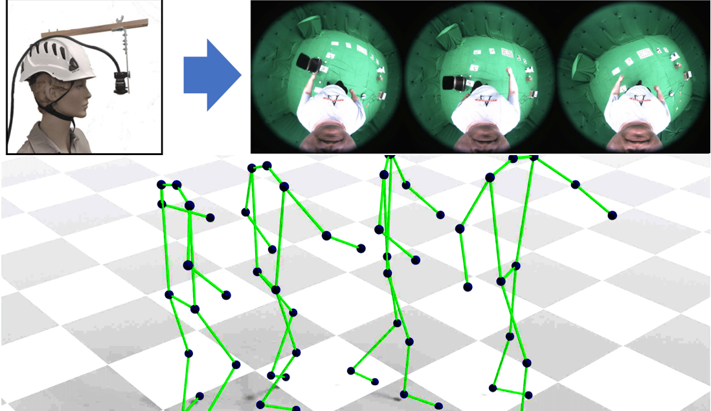

|
I am a research scientist at Google Zurich, where I work on computer vision and machine learning with the focus on Neural Rendering and Generative Neural Networks. Previously, I was a postdoctoral researcher in the Visual Computing and AI department (previously GVV) of Prof. Christian Theobalt at Max-Planck Institute for Informatics, where I worked on photorealistic rendering of humans and human-centric vision. I obtained my PhD under Prof. Didier Stricker at German Research Center for Artificial Intelligence (DFKI) Kaiserslautern, where I designed 3D shape representations for general machine learning applications. I got my bachelor and masters degrees in the subject of Computer Science and Engineering from the Indian Institute of Technology Kharagpur, India (IIT Kharagpur). Email / Google Scholar / |
|
I'm interested in computer vision, machine learning, optimization, and image processing. Much of my research is about inferring the physical world (shape, motion, color, light, etc) from images. Representative papers are highlighted. |
|
Style and Pose Control for Image Synthesis of Humans from a Single Monocular View.
K. Sarkar, V. Golyanik, L. Liu and C. Theobalt.
arXiv.org, 2021.
[paper] [project page] |
|
|
HumanGAN: A Generative Model of Humans Images
K. Sarkar, L. Liu, V. Golyanik, and C. Theobalt. arXiv.org, 2021. [paper] [project page] |
|

|
Neural Actor: Neural Free-view Synthesis of Human Actors with Pose Control.
L. Liu, M. Habermann, V. Rudnev, K. Sarkar, J. Gu and C. Theobalt.
arXiv.org, 2021.
[paper] [project page] |
|
EgoRenderer: Rendering Human Avatars from Egocentric Camera Images
T. Hu, K. Sarkar, L. Liu, M Zwicker and C. Theobalt.
International Conference on Computer Vision (ICCV), 2021
[paper] [project page] |
|
|  |
Estimating Egocentric 3D Human Pose in Global Space
J. Wang, L. Liu, W. Xu, K. Sarkar and C. Theobalt.
International Conference on Computer Vision (ICCV), 2021
[paper] [project page] |

|
Pose-Guided Human Animation from a Single Image in the Wild.
J. S. Yoon, L. Liu, V. Golyanik, K. Sarkar, H. S. Park, and C. Theobalt. Computer Vision and Pattern Recognition (CVPR), 2021 [paper] [video] [project page] |
| Neural Re-Rendering of Humans from a Single Image. K. Sarkar, D. Mehta, W. Xu, V. Golyanik and C. Theobalt. European Conference on Computer Vision (ECCV), 2020. [paper] [supplement] [video] [project page] Featured in "ECCV 2020 Daily" (link) | |
| Simple domain adaptation for CAD based object recognition. K. Sarkar and D. Stricker. International Conference on Pattern Recognition Applications and Methods, 2019. [paper] | |
| Structured low-rank matrix factorization for point-cloud denoising. K. Sarkar, F. Bernard, K. Varanasi, C. Theobal, and D. Stricker. International Conference on 3D Vision (3DV), 2018 [paper] [supplement] | |
| Learning 3d shapes as multi-layered height-maps using 2d convolutional networks. K. Sarkar, B. Hampiholi, K. Varanasi, and D. Stricker. European Conference on Computer Vision (ECCV), 2018. [paper] [supplement] | |
| Denoising of Point-clouds Based on Structured Dictionary Learning. K. Sarkar, F. Bernard, K. Varanasi, C. Theobal, and D. Stricker. Symposium on Geometry Processing, Eurographics Association (SGP), 2018. (invited poster) [paper] | |
| 3D Shape Processing by Convolutional Denoising Autoencoders on Local Patches. K. Sarkar, K. Varanasi, and D. Stricker. Winter Conference on Applications of Computer Vision (WACV), 2018 [paper] | |
| Learning quadrangulated patches for 3d shape parameterization and completion. K. Sarkar, K. Varanasi, and D. Stricker. International Conference on 3D Vision (3DV), 2017 [paper] | |
| Trained 3d models for CNN based object recognition. K. Sarkar, K. Varanasi, and D. Stricker. International Conference on Computer Vision Theory and Applications (VISAPP), 2017 [paper] | |
| Feature-augmented trained models for 6dof object recognition and camera calibration. K. Sarkar, A. Pagani, and D. Stricker. International Conference on Computer Vision Theory and Applications (VISAPP), 2016 [paper] |
|
|


{kind=link}
|
Feel free to steal this website's source code. Do not scrape the HTML from this page itself, as it includes analytics tags that you do not want on your own website — use the github code instead. Also, consider using Leonid Keselman's Jekyll fork of this page. |